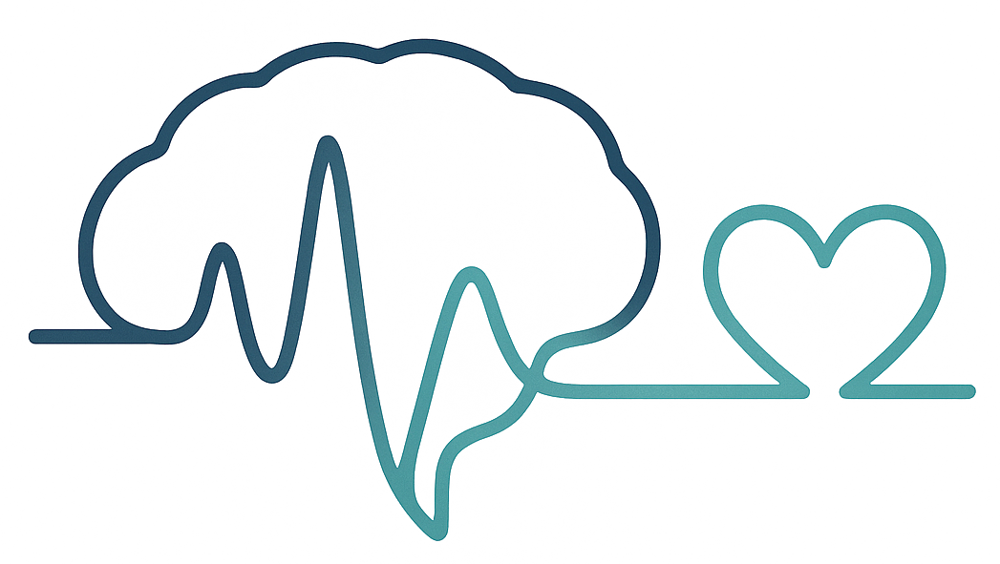

<style>
:root{--hero-bg:#0f172a;--hero-fg:#e2e8f0;--accent:#38bdf8;--accent-contrast:#041318}
.hero{position:relative;isolation:isolate;background:linear-gradient(135deg,#0f172a,40%,#111827) no-repeat;padding:4rem 1.25rem}
.hero:before{content:"";position:absolute;inset:0;z-index:-1;opacity:.25;background:radial-gradient(1200px 600px at 10% -10%,#38bdf8 0%,transparent 60%),radial-gradient(1000px 500px at 120% 10%,#a78bfa 0%,transparent 60%)}
.hero__inner{max-width:1100px;margin:0 auto;color:var(--hero-fg)}
.hero__eyebrow{display:inline-block;font-size:.9rem;letter-spacing:.08em;text-transform:uppercase;color:#a5b4fc;background:rgba(99,102,241,.08);border:1px solid rgba(99,102,241,.35);padding:.35rem .6rem;border-radius:999px}
.hero__title{margin:.8rem 0 1rem 0;font-size:clamp(2rem,6vw,3.2rem);line-height:1.1;color:#f8fafc}
.hero__subtitle{max-width:65ch;margin:0 0 2rem 0;font-size:clamp(1rem,2.5vw,1.2rem);color:#cbd5e1}
.hero__actions{display:flex;gap:.8rem;flex-wrap:wrap}
.btn{display:inline-flex;align-items:center;justify-content:center;height:3rem;padding:0 1.1rem;border-radius:.75rem;border:1px solid rgba(148,163,184,.25);text-decoration:none;font-weight:600}
.btn--primary{background:var(--accent);color:var(--accent-contrast);border-color:transparent}
.btn--ghost{background:transparent;color:#e2e8f0}
.btn:focus-visible{outline:3px solid #93c5fd;outline-offset:2px}
@media (prefers-reduced-motion:no-preference){.btn{transition:transform .12s ease,opacity .12s ease,background .2s ease}.btn:hover{transform:translateY(-1px)}}
@media (min-width:960px){.hero{padding:5rem 2rem}}
</style>
<section class="hero" role="banner" aria-label="Presentación">
<div class="hero__inner">
<span class="hero__eyebrow">SIPBALAB</span>
<h1 class="hero__title">Laboratorio de Procesado de Señal y Aplicaciones Biomédicas</h1>
<p class="hero__subtitle">El Laboratorio de Procesado de Señal y Aplicaciones Biomédicas (SIPBA) de la Universidad de Granada actúa como un servicio común de investigación destinado a ofrecer soporte técnico, metodológico y formativo en adquisición, procesamiento y modelado de datos biomédicos a investigadores, grupos y entidades clínicas o industriales. Se focaliza en el análisis de señales fisiológicas, su integración con modalidades de imagen y el desarrollo de métodos avanzados, especialmente cuando se introduzca la nueva infraestructura de resonancia magnética de bajo campo.</p>
<div class="hero__actions">
<a class="btn btn--primary" href="projects.html" aria-label="Ver proyectos">Ver proyectos</a>
<a class="btn btn--ghost" href="contact.html" aria-label="Contactar">Contactar</a>
</div>
</div>
<div style="position: absolute; bottom: 0; right: 0; padding: 1rem;">
    
</div>
</section>
